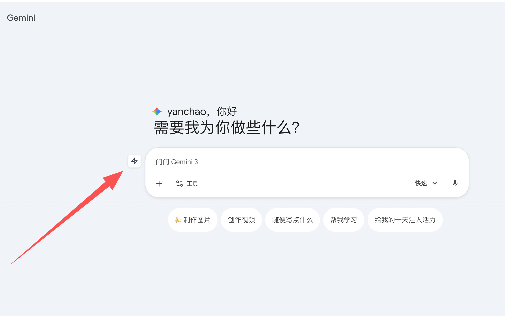
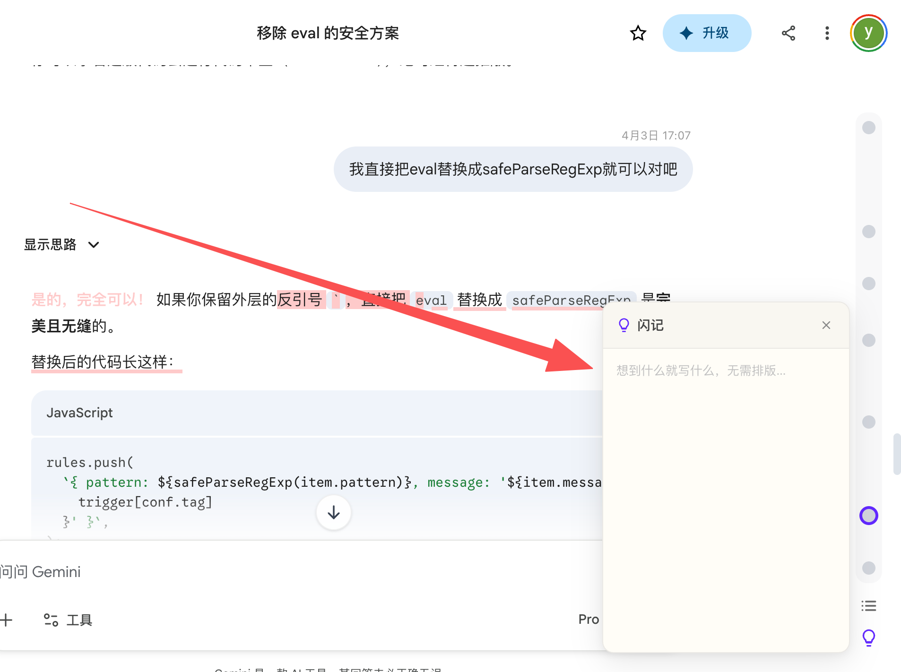
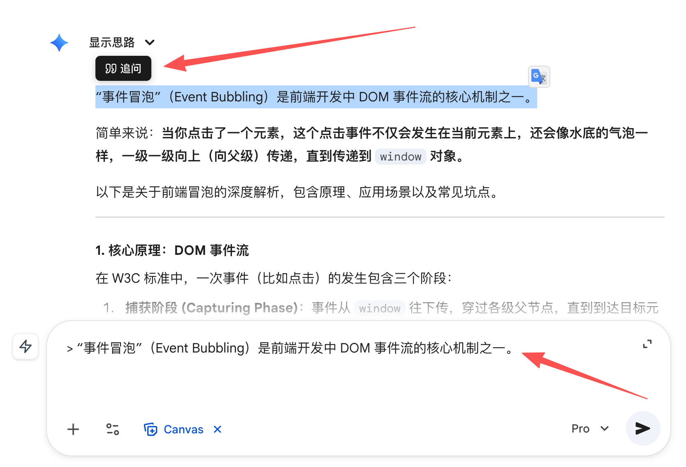
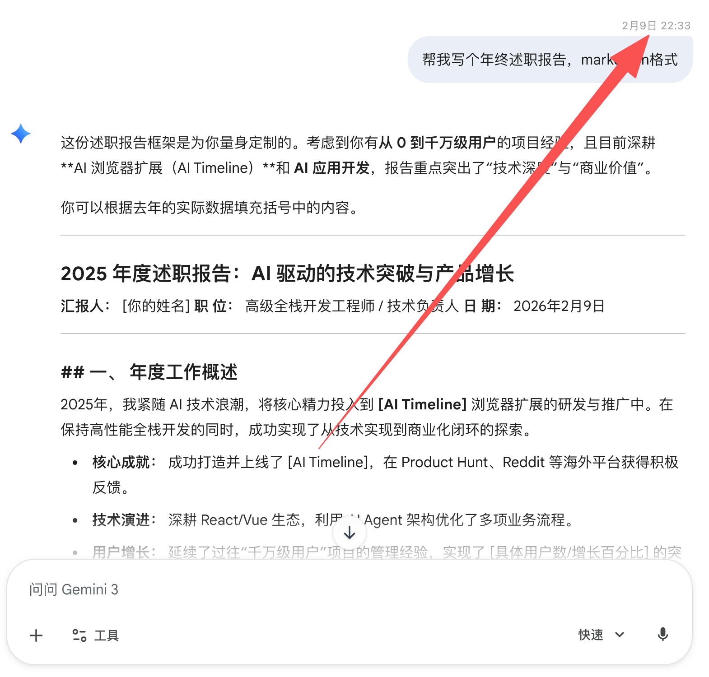
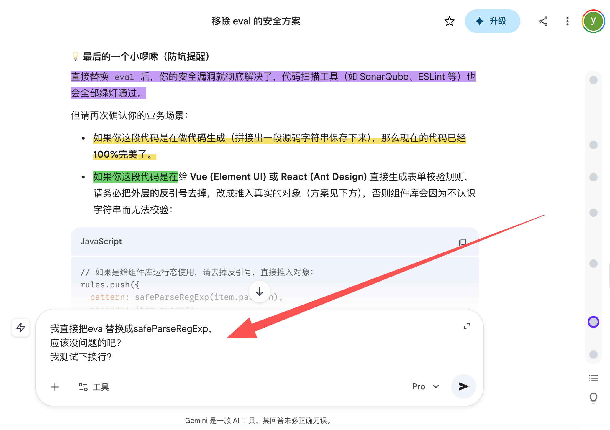
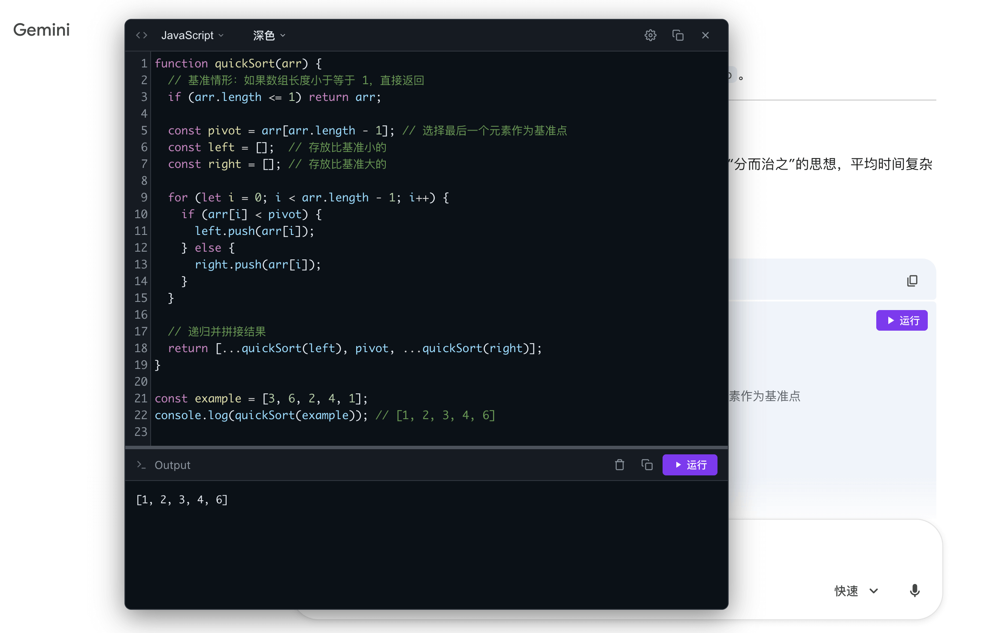

安装
本插件支持 Chrome、Edge、Firefox 浏览器，请选择你使用的浏览器：
Chrome 浏览器
- 点击下方按钮访问 Chrome 网上应用店
- 点击页面上的「添加到 Chrome」按钮
- 在弹出的确认框中点击「添加扩展程序」
Edge 浏览器
- 点击下方按钮访问 Microsoft Edge 外接程序商店
- 点击页面上的「获取」按钮
- 在弹出的确认框中点击「添加扩展」
Firefox 浏览器
快速上手
安装完成后，打开任意 AI 平台，进行对话即可使用。
-
1. 打开 AI 平台
访问支持的 AI 平台（如 ChatGPT、Claude、Gemini、DeepSeek 等），扩展会自动激活。 -
2. 进行任意对话
与 AI 进行对话。 -
3. 验证
如果对话框左侧出现闪电的图标，说明安装成功。
安装成功后，查看核心功能

对话时间轴
把你跟 AI 的对话整理成一条时间轴，可以快速在对话间跳转，再也不用费力翻滚查找对话了。

解决痛点
- 对话轮数多时，翻找历史对话很困难
- 重要对话无法收藏，后期翻阅不方便
文件夹
将对话按分类归入不同文件夹，展示在侧边栏，告别杂乱无章。支持跨 AI 平台文件夹管理。

解决痛点
- 当前 AI 平台的对话列表都是按时间顺序排列的，无法分类整理对话。有了文件夹功能，你可以把重要对话按分类整理到文件夹中，下次翻找起来特别方便。
⭐ 统一管理：收藏的对话会统一显示在侧边面板中，无论来自哪个 AI 平台。
文本高亮
选中网页上的文字，像荧光笔一样标记出来。支持多种颜色和样式，可以添加备注。标记会自动保存，下次打开页面时原样恢复。

解决痛点
- 网页上没法划重点 — 看到重要内容只能靠记忆或复制到别处，无法直接在原文标记
- 标记无法保留 — 浏览器选中文字松手就没了，下次打开页面什么都不剩
提示词指令库
将常用的提示词保存起来。点击对话输入框旁的快捷按钮，即可一键调取使用。

解决痛点
- 常用提示词需要反复输入，效率低下
- 好用的提示词没地方保存，容易丢失
🚀 一键使用：从列表中选择提示词，它会自动填充到输入框中。
复制公式
智能识别任意网页上的公式，一键复制为 LaTeX、MathML格式。

解决痛点
- 网页上的公式通常无法直接复制为 LaTeX 或 MathML，手动转换很麻烦。
闪记
想到什么就写什么，随手记录灵感，跨 AI 平台使用。

追问
看 AI 的回复时，想针对哪句话继续聊，直接选中它就能发起「追问」。这样沟通更聚焦，再也不用担心 AI 跑题或者搞混上下文了。

解决痛点
- AI 回复很长，想针对某一句追问时，AI 不知道你问的是哪句
对话时间
在每条用户消息旁边显示发送时间标签，记录你和 AI 的对话时间线。

解决痛点
- 几乎所有 AI 对话平台都不显示消息发送时间。
换行与发送消息
改变 AI 对话平台输入框的 Enter 键行为，让 Enter 用于换行，通过其他组合键发送消息。

代码运行
在网页上直接运行代码块，快速验证代码是否正确。

解决痛点
- 想验证代码是否正确，需要复制到本地环境运行，很麻烦
跨浏览器同步
在不同浏览器和设备之间同步数据。

解决痛点
- 换设备或浏览器后，之前的数据都丢失了
📦 导入导出：在设置中导出数据备份，在新设备上导入即可恢复所有数据。
电子宠物
在 AI 生成回复时，页面会出现一只电子宠物（例如一只缓慢爬行的蜗牛），让等待过程更轻松、不再单调。

关于我们
ChatLine 致力于提升你使用 AI 的效率。
当你在浏览器上使用 AI 时，你会需要它。
我们不提供 AI 服务，我们只专注于提升你使用 AI 的效率。
📮 联系开发者
miguchn@gmail.com